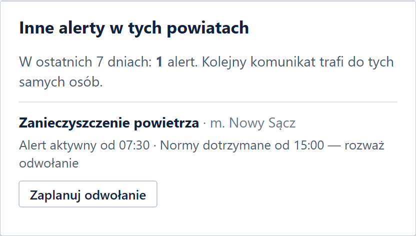
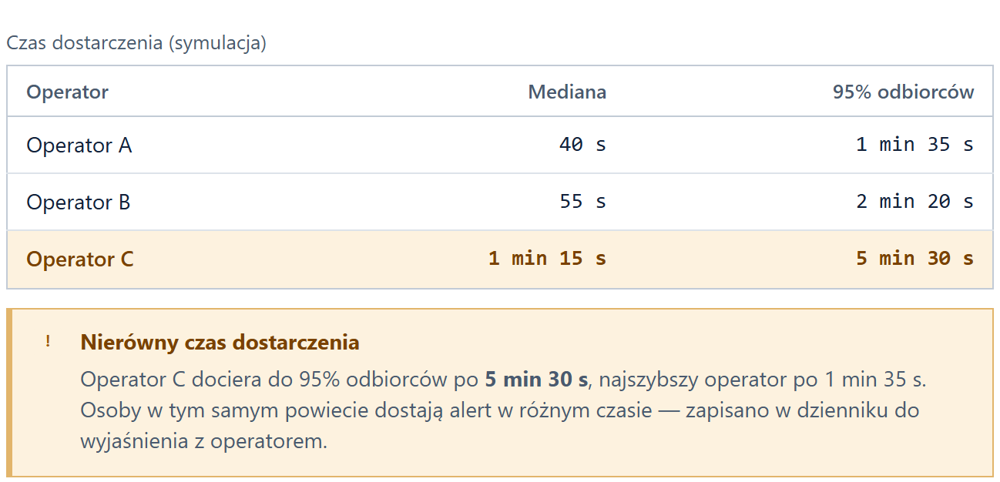
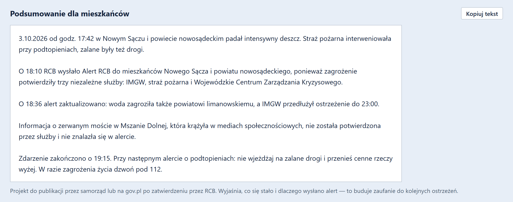

Od alertu
do działania
System wspomagania decyzji dla RCB, który odbudowuje zaufanie do ostrzeżeń
System wspomagania decyzji dla RCB, który odbudowuje zaufanie do ostrzeżeń
Jan Domański · Jakub Goleman · Krystian Góźdź · Maks Kozieł · Piotr Niemiec
ZESPÓŁ MoAI · HACKYEAH 2026 · OPEN TASK: DEFENCE
Komunikaty są chaotyczne, nieprecyzyjne i mylące — często nie wiadomo, co właściwie trzeba zrobić.
Przychodzi ich zbyt wiele, także mało istotnych. Ludzie mają dość systemu.
Nie każdy dostaje każdy alert, a osoby w tym samym miejscu dostają ten sam alert w różnym czasie.
Cel: żeby ludzie znów uwierzyli w sens alertów i zaangażowali się we wspólne bezpieczeństwo.
Pięć źródeł problemu —
każde wymaga innej odpowiedzi
| Obszar | Problem | Skutek |
|---|---|---|
| Treść | Nieprecyzyjne, niekompletne komunikaty | Odbiorca nie wie, co zrobić |
| Częstotliwość | Powtarzające się lub mało istotne ostrzeżenia | Zmęczenie alertami (alert fatigue) |
| Dystrybucja | Różny czas dostarczenia, brak części wiadomości | Nierówny dostęp do informacji |
| Koordynacja | Instytucje przekazują niespójne informacje | Dezorientacja i opóźnienia |
| Zaufanie | Brak informacji, co się wydarzyło i dlaczego wydano alert | Coraz mniej osób traktuje ostrzeżenia poważnie |
Ograniczenia, które respektujemy: alert tylko przy bezpośrednim zagrożeniu życia lub zdrowia, najmniejszy obszar to powiat, SMS ma 160 znaków bez polskich liter.
Sprawdziliśmy 9 prawdziwych Alertów RCB (2020–2026): 8 z 9 nie mówi, do kiedy obowiązuje zagrożenie, a jeden zamiast instrukcji zawiera tylko link.
Treści alertów za hasłem „Alert RCB” w polskiej Wikipedii (z przypisami do mediów i RCB); ocena naszym walidatorem.
Nie pytamy „jak wysłać lepszy SMS”, tylko jak sprawić, żeby każdy alert prowadził do właściwego działania i budował zaufanie do następnego.
System dla RCB, nie aplikacja dla obywatela. Nie zastępujemy Alertu RCB — wykorzystujemy go lepiej.
Weryfikacja źródeł i koordynacja informacji w sytuacji kryzysowej.
| Standardowe podejście | RCB SIGNAL |
|---|---|
| Aplikacja dla obywatela | Narzędzie operacyjne dla RCB |
| Kolejny kanał powiadomień | Lepsza obsługa istniejących alertów |
| Generator SMS | Kontrola kompletności, spójności i wykonalności instrukcji |
| Mapa zagrożeń | Zagrożenie w kontekście już wydanych ostrzeżeń |
| Liczenie wysłanych alertów | Pomiar jakości i efektów ostrzegania |
| Jednorazowe usprawnienie | Uczenie się na kolejnych zdarzeniach |
| Automatyzacja decyzji | AI rekomenduje, człowiek decyduje |
Każde zdarzenie poprawia
następne ostrzeżenie
Meldunki IMGW, PSP, WCZK łączone w jedną kartę zdarzenia. Plotki oznaczone jako niezweryfikowane.
Kontrola komunikatu: co, gdzie, do kiedy, co zrobić, 160 znaków, zgodność ze źródłami.
Mapa zagrożenia vs obszar alertu. Dyżurny zatwierdza z uzasadnieniem — wszystko w dzienniku.
Raport dystrybucji per operator, zmiana sytuacji, nieaktualny alert → rekomendacja aktualizacji.
Raport po zdarzeniu: powtarzające się błędy i zmiany w procedurach i komunikatach.
Testy komunikatów na panelach, także z osobami starszymi.
Regularne, niezależne ankiety z pomiarem bazowym.
Istniejące kanały gmin wyjaśniają, po co był alert.
Publiczne podsumowanie: co się stało i dlaczego ostrzegano.
Brak godziny zakończenia · instrukcja zbyt ogólna
7 kryteriów (co, gdzie, kiedy, co zrobić, 160 znaków, zgodność, czytelność), silnik regułowy: ten sam tekst = ten sam wynik. Błędy blokujące uniemożliwiają zatwierdzenie.
| ✓ | Panel aktywnych zdarzeń z wielu źródeł |
| ✓ | Karta sytuacyjna: meldunki w jednym zdarzeniu, weryfikacja źródeł, duplikaty |
| ✓ | Walidator alertu: 160 znaków, instrukcja, brakujące dane, rekomendacja |
| ✓ | Mapa powiatów: strefa zagrożenia vs obszar alertu, pominięte powiaty |
| ✓ | Zatwierdzanie i historia: uzasadnienie, różnice wersji, dziennik decyzji |
| ✓ | Raport po zdarzeniu: KPI, błędy, jakość, podsumowanie dla mieszkańców |
Walidator 7 kryteriów i rekomendacja konkretnej instrukcji: 78 → 92.
Inne alerty w tych powiatach z 7 dni i rekomendacja odwołania nieaktualnego. Duplikat: połącz albo rozdziel — decyduje człowiek.
Raport czasu dostarczenia per operator. Ostrzeżenie, gdy ludzie w tym samym powiecie dostają alert w różnym czasie.
Meldunki IMGW, PSP, WCZK w jednym zdarzeniu; zgodność alertu ze źródłami (np. godzina 22:00 vs 23:00).
Po zdarzeniu: podsumowanie dla mieszkańców — co się stało i dlaczego ostrzegano. Plotki nie trafiają do alertu.



Czy można temu zaufać?
| Ryzyko | Jak je ograniczamy |
|---|---|
| AI wymyśla niepotwierdzone informacje | Rekomendacje tylko z zatwierdzonych danych; wynik liczy deterministyczny silnik reguł, LLM jest wyłącznie doradczy |
| Błędne łączenie różnych zagrożeń | Weryfikacja źródeł (min. 2 niezależne służby); możliwy duplikat wymaga decyzji dyżurnego |
| Nadmierne poleganie na rekomendacjach | AI nie wysyła, nie odwołuje i nie zmienia obszaru; zatwierdzenie z uzasadnieniem i pełny dziennik |
| Nadmierna liczba alertów | Wspólna obsługa zdarzenia i wykrywanie duplikatów — bez automatycznego tłumienia ostrzeżeń |
| Manipulacja treścią zgłoszeń | Treść źródeł to dane, nie polecenia: prompt injection trafia do kwarantanny |
| Prywatność i brak danych operatorów | Wyłącznie dane zagregowane; integracje z operatorami jako kolejny etap, dziś tryb symulacji |
| Wskaźnik | Cel pilotażu |
|---|---|
| Komunikaty spełniające kryteria kontroli | ≥ 95% |
| Zrozumienie instrukcji vs komunikaty bazowe | +20 p.p. |
| Mediana czasu przygotowania komunikatu | −30% |
| Wykryte zdefiniowane błędy (zestaw testowy) | ≥ 90% |
| Alerty z raportem dystrybucji* | 100% |
| Zaufanie do alertów vs pomiar bazowy | +10 p.p. |
Cele do zmierzenia w pilotażu, nie wyniki RCB. * o ile operatorzy udostępnią dane. Zaufanie mierzymy osobno — lepsze zrozumienie to jeszcze nie zaufanie.
Archiwalne alerty vs wersje sprawdzone przez SIGNAL. Pierwszy wynik: 9 prawdziwych alertów, 8 bez „do kiedy”.
Grupy dostają różne wersje: co, gdzie, co zrobić?
Bez i z SIGNAL: czas, błędy, trafność decyzji.
Bez wpływu na prawdziwe decyzje; wdrożenie dopiero po wynikach.
Później: Cell Broadcast jako dodatkowy kanał na problem opóźnień SMS — koncepcja od niego nie zależy.
Następny krok: pilotaż obserwacyjny z RCB i jednym WCZK — wdrożenie lokalne, bez chmury, działa offline.
Stos: Python (biblioteka standardowa) + JavaScript, bez zależności, działa offline. Granice powiatów: PRG (GUGiK, przez ppatrzyk/polska-geojson, MIT); zdarzenia i dane w demo są fikcyjne; test historyczny na treściach Alertów RCB z Wikipedii.
Wykorzystanie AI: Claude (Anthropic) wspierał tworzenie kodu, dokumentacji i prezentacji; opcjonalny moduł LLM w aplikacji ma rolę doradczą.